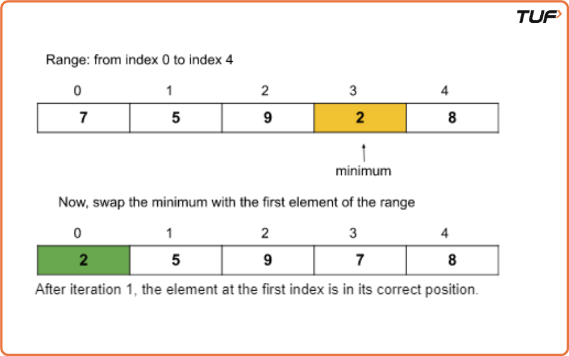
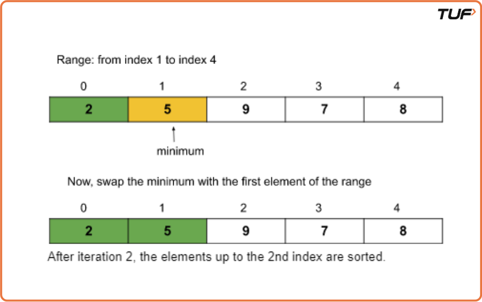
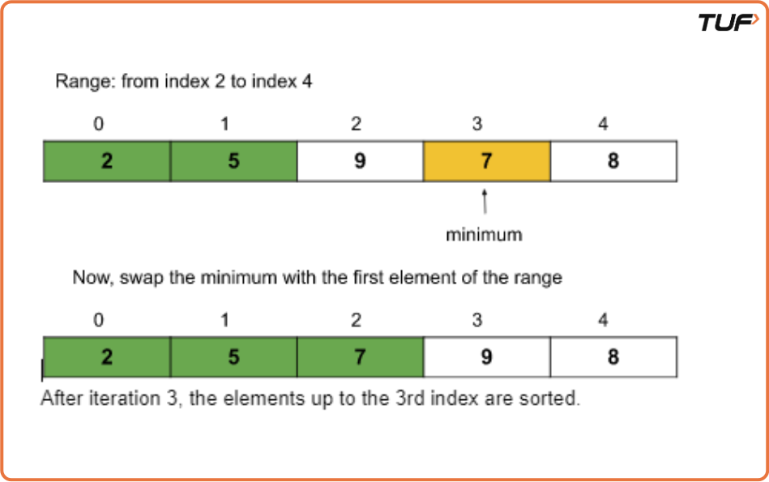
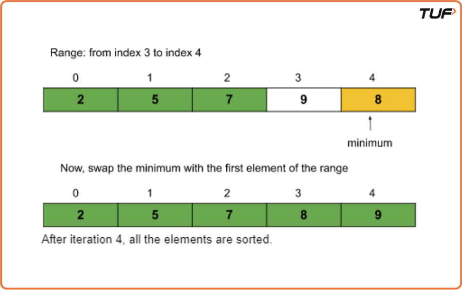

Selection Sort Algorithm
Problem Statement: Given an array of N integers, write a program to implement the Selection sorting algorithm.
Examples
Example 1:
Input: N = 6, array[] = {13,46,24,52,20,9}
Output: 9,13,20,24,46,52
Explanation: After sorting the array is: 9, 13, 20, 24, 46, 52
Example 2:
Input: N=5, array[] = {5,4,3,2,1}
Output: 1,2,3,4,5
Explanation: After sorting the array is: 1, 2, 3, 4, 5
Disclaimer: Here is the practice link to help you assess your knowledge better. It's highly recommend trying to solve it before looking at the solution.
Approach
Algorithm
- First, we will select the range of the unsorted array using a loop (say i) that indicates the starting index of the range. The loop will run forward from 0 to n-1. The value i = 0 means the range is from 0 to n-1, and similarly, i = 1 means the range is from 1 to n-1, and so on. (Initially, the range will be the whole array starting from the first index.)
- Now, in each iteration, we will select the minimum element from the range of the unsorted array using an inner loop.
- After that, we will swap the minimum element with the first element of the selected range(in step 1).
- Finally, after each iteration, we will find that the array is sorted up to the first index of the range.
Dry Run
Iteration 1:
Iteration 2:
Iteration 3:
Iteration 4:
So, after 4 iterations(i.e. n-1 iterations where n = size of the array), the given array is sorted.
Code
#include <bits/stdc++.h>
using namespace std;
// Function to perform selection sort
void selection_sort(int arr[], int n) {
// Traverse the array
for (int i = 0; i < n - 1; i++) {
int mini = i; // Assume current index holds the minimum value
// Find the index of the smallest element in the remaining array
for (int j = i + 1; j < n; j++) {
if (arr[j] < arr[mini]) {
mini = j; // Update mini if smaller element is found
}
}
// Swap the found minimum element with the first element of unsorted part
int temp = arr[mini];
arr[mini] = arr[i];
arr[i] = temp;
}
// Print the sorted array
cout << "After selection sort: " << "\n";
for (int i = 0; i < n; i++) {
cout << arr[i] << " ";
}
cout << "\n";
}
int main() {
// Initialize array
int arr[] = {13, 46, 24, 52, 20, 9};
int n = sizeof(arr) / sizeof(arr[0]);
// Print array before sorting
cout << "Before selection sort: " << "\n";
for (int i = 0; i < n; i++) {
cout << arr[i] << " ";
}
cout << "\n";
// Call selection sort
selection_sort(arr, n);
return 0;
}
Complexity Analysis
Time Complexity:O(N^2),Selection sort runs in O(N²) time in the best, average, and worst cases due to its nested loop structure. It makes approximately N(N-1)/2 comparisons, regardless of the array's initial state. Even if no swaps are needed (best case), the number of comparisons remains the same./p>
Space Complexity: O(1). No extra space used